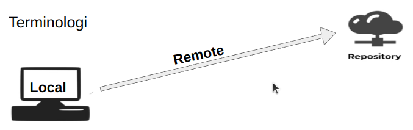
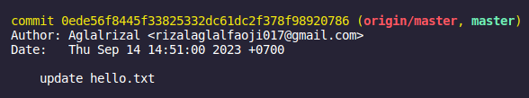
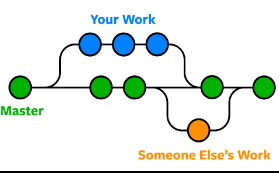

Sebelum kita membahas Git, baiknya kita mengenal terlebih dahulu VCS atau Version Control System. Version control system adalah sebuah sistem yang dapat mengelola perubahan dalam file, baik itu berupa dokumen, source code ataupun program komputer.
Git merupakan salah satu software VCS paling populer saat ini, seperti VCS pada umumnya, Git berfungsi untuk mengelola perubahan di dalam folder (repository). Riwayat perubahan disimpan melalui serangkaian commit.
Berikut merupakan hal-hal yang bisa dilakukan oleh Git:
- Menyimpan 'rekaman/snapshot' perubahan pada source code;
- Memungkinkan kolaborasi tim yang lebih baik;
- Mengetahui siapa yang melakukan perubahan dan kapan perubahan dilakukan;
- Memungkinkan user untuk kembali ke keadaan sebelum perubahan dengan memanfaatkan fitur checkout.
Pernahkah kalian bertanya-tanya "Git sama GitHub sama gak sih?" "kalo instal Git doang tanpa pake GitHub atau sebaliknya bisa gak sih?".
Pertama, Git dan GitHub tidaklah sama, Git adalah VCS yang menyimpan rekaman perubahan pada file/source code secara lokal di komputer kita, oleh karena itu, untuk menggunakan Git kita perlu menginstalnya terlebih dahulu. Sedangkan GitHub adalah situs web yang memungkinkan kita untuk menyimpan rekaman perubahan file/source di internet, jadi dengan GitHub, kita dapat mengunggah source kita ke server GitHub sehingga dapat diakses secara online. Dan orang lain dapat berkolaborasi dengan kita di sana, melihat kode kita, memberikan masukan, atau bahkan menyumbang perubahan. Berikut merupakan ilustrasinya 
Kedua, bisa saja, namun bila hanya menggunakan Git saja salah satu kekurangannya adalah kita harus selalu membawa komputer kita kemana-mana bila ingin melanjutkan pembuatan suatu file atau program, hal ini dikarenakan kita tidak memiliki salinan progres kerja kita yang disimpan secara remote(pada GitHub misalnya), jadi kurang fleksibel dan berimbas pada terbatasnya kolaborasi dengan orang lain. Sedangkan jika hanya menggunakan GitHub, kita tidak akan memiliki kontrol penuh atas source code secara lokal, yang berarti kita tidak dapat mengelola perubahan atau cabang secara offline atau tanpa koneksi internet, dan kita juga tidak akan dapat menggunakan Git untuk proyek yang sepenuhnya offline atau terisolasi. Jadi, baiknya kita menggunakan keduanya, menggunakan Git di komputer lokal untuk mengelola source dan kemudian mengunggah kode tersebut ke GitHub atau platform hosting Git lainnya agar bisa berkolaborasi dengan tim dan membuat source code tersedia secara online agar bisa diakses dimana saja.
Langkah pertama untuk menggunakan Git tentu saja dengan menginstalnya di komputer kita. klik disini untuk mengunduh git, pilih versi yang sesuai dengan OS kamu ya.
Setelah itu sila buka git bash/cmd/terminal untuk mengkonfigurasi/set up git, selanjutnya, sila ketikan perintah berikut:
git config --global user.name "username_kamu"
git config --global user.email "email_kamu"
Jika langkah-langkah di atas telah dilakukan mari kita bermain dengan Git.
Semua perintah di bawah ini dilakukan pada gitbash, cmd ataupun terminal.
git init berfungsi untuk membuat repository kosong yang baru atau mengubah folder yang telah ada menjadi sebuah git repository.
git init
git add berfungsi untuk menambahkan dan mendata perubahan yang terjadi ke staging area, perubahan-perubahan yang sudah di add inilah yang nantinya direkam pada saat commit dilakukan.
git add . : untuk menambahkan seluruh perubahan yang terjadi pada repo.
git add .
git add namafile.format : untuk menambahkan satu file tertentu.
git add namafile.format
git status berfungsi untuk mengecek daftar perubahan yang terjadi, baik yang sudah terdata artinya sudah ditambahkan ke dalam staging area melalui perintah git add ataupun yang belum.
git status
git commit berfungsi untuk menyimpan perubahan yang terdata di staging area. Biasanya diikuti oleh -m "pesan commit".
git commit -m "menambahkan index.html"
pesan sangat berguna untuk memberi tahu perubahan apa yang dilakukan, misal pada kode di atas, pesannya adalah menambahkan index.html, artinya perubahan yang dilakukan oleh orang yang melakukan commit adalah menambah index.html ke dalam repository.
git log digunakan untuk menampilkan daftar commit yang dilakukan pada suatu repository.
git log
 Berdasarkan gambar diatas, data commit yang ditampilkan adalah id commit yang berwarna kuning, lalu yang di dalam kurung adalah branch tempat commit dilakukan, selanjutnya ada author(orang yang melakukan commit), lalu ada date yang berisi data waktu commit tersebut dilakukan dan terakhir ada pesan commit "update hello.txt".
git checkout berfungsi untuk beralih ke branch/cabang atau commit tertentu.
Untuk beralih branch/cabang gunakan kode berikut
git checkout nama_cabang
Untuk beralih ke commit tertentu
git checkout id_commit
Branch atau cabang telah beberapa kali disebutkan diatas, sebenarnya apa sih branch itu?  Setiap repository setidaknya mempunyai sebuah cabang yang merupakan cabang utama biasanya bernama main atau master, kita bisa membuat cabang tambahan dari cabang utama ini untuk mengembangkan fitur baru, memperbaiki bug, atau melakukan pekerjaan terpisah tanpa memengaruhi kode di cabang utama.
Perintah untuk melihat cabang yang ada pada repository
git branch
Perintah untuk membuat cabang baru
git branch nama_branch
Lalu bisakah kita menggabungkan perubahan dari satu branch ke branch lainnya? tentu saja bisa, bisa dilihat pada gambar di atas your work(biru) merupakan cabang dari branch master(hijau) dan mempunyai jalurnya tersendiri, namun pada akhirnya branch your work(biru) bergabung dengan branch master(hijau). Fungsi ini dinamakan dengan merge, dapat dilakukan dengan perintah:
git merge nama_cabang
git push berfungsi untuk mengirim perubahan berupa commit yang dilakukan ke remote repository, salah satu website yang dapat menyimpan repository kita secara online adalah GitHub, oleh karena itu, sila buat akun GitHub-nya terlebih dahulu bila belum mempunyai akun. Sila klik link berikut untuk daftar GitHub: Gas daftar! Namun, sebelum bisa melakukan push kita harus menambahkan alamat remote repository, bila di dalam akun GitHubnya belum memiliki repository, sila buat repository terlebih dahulu, jika sudah, salin alamat repository tersebut. Untuk menambahkan alamat remote repository gunakan perintah:
git add remote origin https://github.com/username/name_repo.git
Setelah melakukan hal tersebut baru kita bisa melakukan push dengan menggunakan perintah git push
git push
git pull merupakan kebalikan daripada git push, jadi fungsinya adalah untuk mengambil perubahan dari remote repository dan biasanya digunakan untuk menggabungkan perubahan dari remote repository ke dalam repository lokal. Sebelum bisa melakukan pull, repository lokal kita harus telah terhubung dengan remote repository-nya, cara menghubungkannya ada di bagian git push.
Untuk mengecek remote repository yang terhubung gunakan perintah:
git remote -v
Selanjutnya, untuk melakukan pull gunakan perintah:
git pull
git fetch ini fungsinya mirip dengan git pull namun perintah ini hanya mengambil perubahan dari remote repository tanpa menggabungkannya
Oiya, sama seperti push dan pull sebelum bisa menggunakan perintah fetch, kita harus terhubung terlebih dahulu dengan remote repository-nya. Berikut cara menggunakan perintah fetch:
git fetch
Diatas telah disebutkan bahwa penggunaan remote repository bisa membantu mempermudah kolaborasi dan karena online kita bisa mengaksesnya dimana saja dengan komputer siapapun. Nah untuk melakukan hal tersebut, git clone hadir dengan fungsi untuk menyalin remote repository entah milik kita maupun milik orang lain ke komputer yang menjalankan perintah tersebut dan tersimpan secara lokal.
Nah cara untuk melakukan clone adalah dengan menjalankan perintah:
git clone alamat_repo_yang_ingin_diclone
GitHub pages adalah layanan hosting dari github yang memungkinkan kita untuk menerbitkan situs web statis secara gratis. Dan situs web ini memanfaatkan fitur GitHub pages.